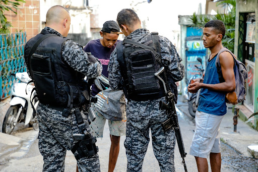
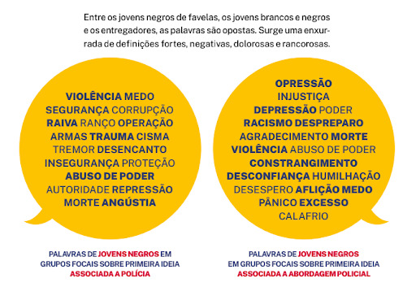
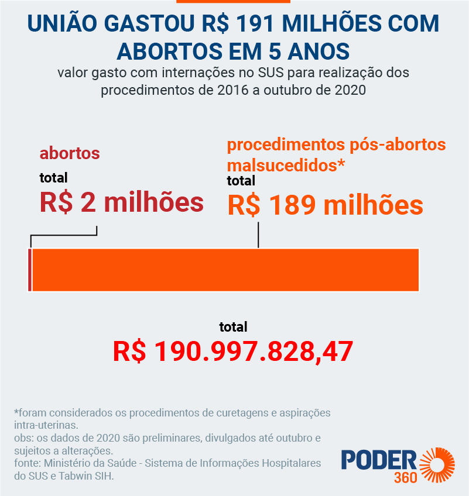

Nesta edição da revista O mundo, abordaremos os assuntos mais quentes do momento!
Segurança Pública e Abordagem com os Jovens
Abordagem Policial
Estereótipos De Pessoas Abordadas pela Policia
“Mão na cabeça!”
A intersecção entre raça, classe social, pertencimento territorial e perfil etário tem sido determinante na produção dos critérios de suspeição na prática policial brasileira. Jovens negros, pobres e moradores de favelas configuram o público alvo das abordagens policiais.
 ir para fonte ir para fonte ir para fonteeleições 2022

As eleições gerais no Brasil em 2022 estão agendadas para o dia 2 de outubro, em primeiro turno, e 30 de outubro em segundo turno, onde houver. Nesse dias, serão eleitos o presidente, o vice presidente e o congresso nacional. As eleições para governador, vice governador estatais; assembleia legislativas estatais e câmara legislativa do distrito federal ocorrerão na mesma ocasião. A votação será realizada simultaneamente em todo o país de 8h ás 17h, observando o horário oficial de Brasília. Devido á diferença de fuso em alguns estados a votação começa e termina mais cedo em algumas regiões como no Amazonas, Rondônia, Mato Grosso do Sul, Roraima, Mato Grosso terão a votação iniciada uma hora antes em relação ao horário de Brasília. No estado do Acre, a votação começará duas horas mais cedo e, em Fernando de Noronha uma hora mais tarde, mantendo-se em todos os estados o mesmo número de horas da votação. Para termos uma escolha sabiá, pesquisamos os candidatos e seus partidos. Aqui no Brasil temos cerca de 32 partidos atualmente ,porém os mais famosos são apenas 17 deles que é: MDB, PTB, PDT, PT, PCdoB, PSB, PSDB, PSe, AVANTE, PP, PCB, PODEMOS, REPUBLICANOS, Psol, PL, PSD, PATRIOTA.
Cargos

Milhões de eleitores brasileiros vão as urnas para escolher os representantes políticos que nos representarão nos próximos 4 anos; para cinco cargo em disputa nas eleições 2022: presidente e vice, governadores e vices, senadores, deputados federais, deputados estaduais ou distritais
Candidatos
Á medida que o calendários eleitoral avança, os nomes dos pré-candidatos á presidência da república se cristalizam na disputa. A quase dois meses para as convenções partidárias já são 12 os pré-candidatos apresentados pela legenda. São eles:


Dissecando legalização do aborto

Argumentos contra e a favor
Contra
A favor
Tipos de aborto
também conhecido como aborto natural ocorre geralmente no início da gravidez, em decorrência de condições fisiológicas da mãe ou do feto, que não favorecem a gravidez.
No caso do aborto acidental, como seu próprio nome diz, acontece de maneira involuntária, ou seja, como resultado de uma experiência traumática da gestante, como estresse, acidente, sustos, dentre outros.
Por fim, existe também o aborto induzido, que diz respeito a um procedimento com o objetivo único de interromper a gravidez. Esse aborto pode ocorrer de forma cirúrgica ou através de medicação.
Os primeiros países que legalizaram o aborto
ao todo, são 63 países onde o aborto é considerado uma prática legalizada e as mulheres que desejam interromper sua gravidez voluntariamente não são presas por isso. Há também as nações, como o Brasil, que permitem a prática em casos de estupro, risco de morte materna ou ainda se o feto não tiver cérebro. Normalmente, só é possível interromper a gravidez de forma legal até a 12ª semana de gestação.
Países em que o aborto nao é legalizado
Polonia: Pôs em vigor uma decisão do tribunal constitucional que proíbe abortos realizados devido a defeitos fetais.
El Salvador: El Salvador tem algumas leis de aborto mais rígidas do mundo.
Malta: As mulheres em Malta não têm acesso ao aborto, mesmo que suas vidas estejam em risco.
Senegal: O Senegal proíbe o aborto, mas o seu código de ética médica o permite se três médicos concordarem que é necessário para salvar a vida de uma mulher.
Emirados Árabes: Nos Emirados Árabes Unidos, o aborto é ilegal, exceto se a gravidez colocar em risco a vida da mulher ou se houver evidências de que o bebê não sobreviverá.
Filipinas: As leis antiaborto nas Filipinas derivam de seu tempo como colônia da Espanha, o aborto é proibido há mais de um século, cerca de mil Filipinas morrem a cada ano por complicações durante o procedimento
“Você é contra ou a favor do aborto?”Em quais situações o aborto é permitido no Brasil
De acordo com a Lei nº 2.848 do código pena, quando não há outro meio de salvar a vida da gestante, e quando a gravidez é resultante de estupro, contanto que com o consentimento da gestante ou, quando incapaz, de seu representante legal.
Vale frisar que, no Código, não há qualquer vedação com relação à idade gestacional. Veja o que diz a lei: Art. 128 - Não se pune o aborto praticado por médico: Aborto necessário
Aborto no caso de gravidez resultante de estupro
ir para fonte
Aborto: um caso de saúde pública

Vivemos em um país onde a saúde pública é vista como segundo caso, visto isso que o aborto é tratado como tabu, desconsiderando a saúde da mulher. Entre diversas opiniões que são contra ou a favor do aborto, esquecemos o motivo de recorrerem a esse método.
Dados
A segunda edição da Pesquisa Nacional de Aborto (PNA), realizada em 2016 pelo Anis Instituto de Bioética e pela Universidade de Brasília (UnB), aponta que 20% das mulheres terão feito ao menos um aborto ilegal ao final da vida reprodutiva, ou seja, uma em cada cinco mulheres aos 40 anos terá abortado ao menos uma vez. De acordo com os dados, em 2015, 417 mil mulheres nas áreas urbanas do Brasil interromperam a gravidez, número que sobe para 503 mil se for incluída a zona rural. Pela grande desigualdade do nosso país, mulheres que tem condições de pagar em torno de 5 mil reais no procedimento ainda tem um mínimo de segurança a seu corpo e mente, mas moças pobres e esquecidas pelo governo se veem indo a clínicas clandestinas, sujeitas a violências físicas e psicológica. Claro, o aborto causa riscos a pessoa independente das situações. Segundo a Pesquisa Nacional de Aborto, de 2016, quase metade das mulheres brasileiras que fez aborto clandestino precisou ser internada para finalizar o aborto: 48% das entrevistadas foram internadas no último aborto relatado.
Em 2020, o sistema de saúde brasileiro já gastou 30 vezes mais com procedimentos pós-abortos incompletos (R$ 14,29 milhões) do que com abortos legais (R$ 454 mil ).
O valor repassado pelo sistema para um aborto legal é de R$ 443,40, mesmo de um parto normal, sem gravidez de risco. Já uma curetagem pós-aborto ou parto custa R$ 179,62 para o SUS, e a aspiração manual intrauterina (AMIU), R$ 142,84.
Mortalidade
A Organização Mundial da Saúde (OMS) não tem dados por país, mas estima que a taxa de mortalidade por procedimentos de abortamento inseguro seja de 30 mortes a cada 100 mil abortos na América Latina e Caribe. A região tem uma das taxas mais altas do mundo, junto com África Subsaariana e Ásia.
O aborto foi a causa de 11,4% das mortes maternas na única investigação realizada no Brasil, em 2002, nas capitais dos estados e no Distrito Federal. Embora nem todo aborto induzido não previsto por lei seja inseguro, já que pode ser realizado com métodos adequados e por profissionais qualificados, diversas pesquisas destacam que a ilegalidade e a clandestinidade aumentam os riscos à saúde associados ao procedimento.
Um estudo brasileiro de 2012 que analisou a mortalidade materna no país decorrente do aborto verificou que ocorrem infecções em 42,9% dos abortos inseguros, contra apenas 3,3% dos abortos seguros. A pesquisa foi publicada no "International Journal of Gynecology & Obstetrics", periódico médico mensal que abrange obstetrícia e ginecologia
Jandira Magdalena dos Santos Cruz
Em 26 de agosto de 2014, Jandira Magdalena dos Santos Cruz morreu ao realizar um aborto em uma clínica clandestina no Rio de Janeiro. Seu corpo foi encontrado mutilado e carbonizado no dia seguinte. O funeral foi realizado no dia 28 de setembro. A auxiliar administrativa foi vista pela última vez na rodoviária de Campo Grande na zona oeste do Rio de Janeiro, estava acompanhada do ex marido Leandro Reis e foi levada junto com outras mulheres por um motorista de uma clínica clandestina ao local iria ocorrer o procedimento. Jandira teria pago pelo aborto R$ 4.500.,
Clínica Clandestina na Zona Oeste do RJ.
Policiais civis da Delegacia da Criança e Adolescente Vítima (DCAV) fecharam nesta 02/09/2021 uma clínica de aborto que funcionava na Freguesia, Zona Oeste do Rio. No local, os agentes prenderam em flagrante o médico Antônio Cabedes Lopes, e sua mulher, Maristela Lopes da Silva, pelos crimes de aborto, crimes contra a saúde pública e relações de consumo, além de furto de energia elétrica.
Os policiais chegaram até o local após investigações para identificar um médico suspeito de praticar abortos em adolescentes. Segundo eles, o médico cobrava em média R$ 5 mil pelo aborto, e contava com a ajuda da mulher como “instrumentadora” e para atrair novas clientes.
Eles também vão responder por crimes contra a saúde pública, já que o local não tinha as mínimas condições de higiene, além de medicamentos abortivos e outros com a data de validade vencida de até quatro anos atrás. Durante a ação, uma paciente, de 36 anos, que havia passado pelo procedimento, foi encontrada no local e encaminhada para um hospital. Segundo os policiais, o médico e sua mulher já foram investigados pela polícia de Manaus, no Amazonas, pela prática de mais de 200 abortos realizados naquele estado.
ir para fonte ir para fonteEducação sexual e sua importância
Relações sexuais, questões de gênero e sexualidade são temas considerados tabus e muitos pais têm dificuldade de falar com os filhos, mas eles fazem parte do mundo da criança e do adolescente e inevitavelmente terão contato com esses assuntos. Aí então entra a educação sexual.
Ao contrarório do que muitos conservadores dizem, educação sexual nao é sobre ensinar a transar, mostrar pornografia ou incentivar a vida sexual precoce; a educação sexual é um atalho para levar crianças e adolescestes a seus direitos sexuais e reprodutivos como previsto no art 6 da constituição.
Direitos Sexuais
Os Direitos Sexuais são os direitos que garante que toda e qualquer pessoa pode viver sua vida sexual com prazer e livre de discriminação. Incluem o direito.Direitos reprodutivos
Os Direitos Reprodutivos compreendem o direito básico de todo casal e de todo indivíduo de decidir livre e responsavelmente sobre o número, o espaçamento e a oportunidade de ter filhos/as e de ter a informação e os meios de assim o fazer, gozando do mais elevado padrão de saúde sexual e reprodutiva. Incluem o direito.Durante a puberdade, quando houver a produção dos hormonios na criança, a tornando adolescente e lhe trazendo curiosidades acerca do assunto, ela vai em busca de informações em qualquer lugar voluntariamente, podendo aprender erroneamente sobre o tema e, possivelmente, se prejudicar; então é melhor que seja de maneira segura, sabendo como se previnir de ISTS e gravidez através do entendimento de como seu corpo funciona por meio do dialogo com os pais, tutores na escola e vigencia das politicas publicas voltadas para essa pauta tão urgente. muitas meninas nem sequer sabem do próprio aparelho reprodutivo. muitas mulheres de 20 a 30 anos nao sabem que o ciclo menstrual dura cerca de 30 dias. quando se sabe o momento em que está fertil ou ovulando, o companheiro compreende a responsabilidade que carrega numa relação, a chance de uma gravidez indesejada, vai diminuir. logo o numero de abortos tambem vao diminuir.
ir para fonte ir para fonte